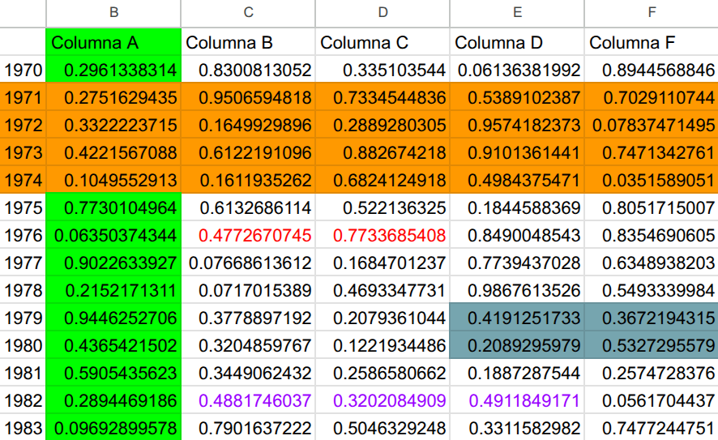
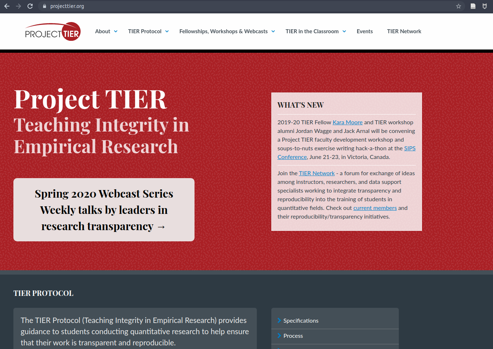
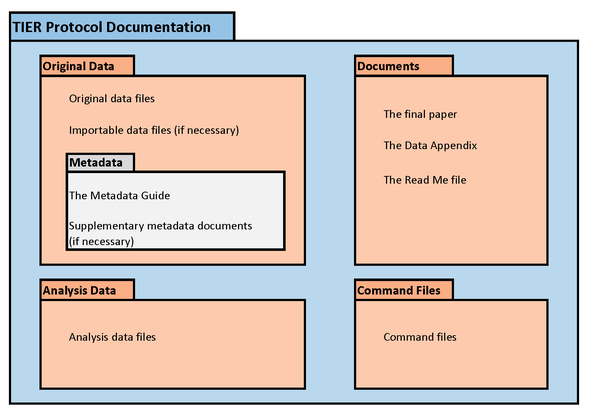

| Plantilla | Descripción | Software | Documentos dinámicos | Control de versiones | Enlace |
|---|---|---|---|---|---|
| IPO-base | Orientado a cualquier software o paquete estadístico. Emplea la estructura de carpetas del protocolo. | Cuaquiera | NO | NO | IPO base |
| IPO-R | Orientado a usuarios de R. Emplea la estructura general de carpetas y posee énfasis en la reproducibilidad de resultados (tablas, figuras, etc) | R | SI | NO | IPO R |
| IPO-Rgit | Mantiene la misma estructura básica, esta versión es una actualización para aprovechar todas las herramientas de reproducibilidad, colaboración y publicación ofrecidas por los entornos de trabajo Quarto / Github. | R+Git | SI | SI | IPO R+Git |

Ciencia Social Abierta
Sesión 5: Flujo reproducible / Protocolo IPO
Juan Carlos Castillo & Tomás Urzúa
Sociología FACSO UChile
Primer Semestre 2026
Contenidos
1. Barreras a la reproducibilidad
2. Carpeta de proyecto - Protocolo IPO
3. Rutas relativas
Contenidos
1. Barreras a la reproducibilidad
2. Carpeta de proyecto - Protocolo IPO
3. Rutas relativas


Elementos para la reproducibilidad
Carpeta de proyecto autocontenida y transferible
Escritura abierta:
- texto simple/plano, libre de software comercial
- citas
- documentos dinámicos
Flujo de trabajo documentado y reproducible
Repositorio con datos y código de análisis abierto
Control de versiones
Barreras a la reproducibilidad
“Al principio Dios vio un Excel lleno de colores”

¿Cómo organizar el flujo de trabajo?
A. ad-hoc (menos reproducible)
- cada investigador define numero de archivos, nombres, carpetas y organización
- explicar al resto cómo se organiza
- documentar en un archivo cómo se organiza
–> reproducibilidad y transparencia LIMITADA
¿Cómo organizar el flujo de trabajo?
B. Protocolo de trabajo reproducible
estructura de carpetas y archivos interconectados que refieren a reglas conocidas
autocontenido: toda la información necesaria para la reproducibilidad se encuentra en la carpeta raíz o directorio de trabajo.
Contenidos
1. Barreras a la reproducibilidad
2. Carpeta de proyecto - Protocolo IPO
3. Rutas relativas
Protocolos reproducibles

Ejemplo protocolo reproducible: TIER

Protocolo TIER

Protocolo IPO
[I]nput
[P]rocesamiento
[O]utput

Protocolo IPO
Estructura de archivos y carpetas
├── input: información externa como datos, imágenes, .bib:
| ├── data-orig: archivos de datos originales y metadatos disponibles
| ├── data-proc: archivos de datos procesados
│ ├── imagenes
│ ├── bib: archivos de bibliografía
│ ├── prereg: archivos de pre-registro si están disponibles
|
├── procesamiento:
│ - preparacion.qmd
│ - analisis.qmd
|
├── output: tablas, gráficos y otras salidas del procesamiento.
│ ├── graphs
│ ├── tables
|
- readme.md : archivo general de introducción
- paper.qmd / paper.html / paper.pdf: el artículo/paperVersiones de IPO
Principios básicos
orden: ¿podré comprender y reproducir esto en 5 años?
comentar los códigos: registrar brevemente los motivos de cualquier decisión
el código de preparación debería comenzar cargando los datos originales y terminar guardando los datos procesados en la carpeta correspondiente (proc).
Flujo de trabajo reproducible

Protocolo IPO en contexto Quarto
Quarto tiene una lógica en sí reproducible, y puede simplificar el uso de protocolos.
Si todo el procesamiento se hace en el mismo documento paper.qmd, entonces basta con la carpeta input de IPO.
Recomendación: realizar la preparación en código externo (carpeta proc) y el análisis en el paper.qmd.
Es solo una propuesta, el sentido último es la reproducibilidad más que el cumplimiento estricto
Contenidos
1. Barreras a la reproducibilidad
2. Carpeta de proyecto - Protocolo IPO
3. Rutas relativas
Rutas relativas
forma de “señalar el camino” para abrir y guardar archivos al interior de una carpeta de proyecto autocontenido (= sin referencias locales)
este camino tiene básicamente 3 direcciones:
bajar -> hacia subcarpetas
subir -> hacia carpetas superiores
subir y bajar -> hacia otras subcarpetas
Rutas relativas: bajando
para “bajar” hacia a una subcarpeta, simplemente damos la ruta de la carpeta/archivo
ej: si estoy en el archivo paper.Rmd (directorio raíz), y quiero incluir una imagen (directorio input/images/imagen.jpg), entonces la ruta es
input/images/imagen.jpgo para señalar la ruta al bib desde paper.Rmd (en raíz):
input/bib/referencias.bib
Rutas relativas: subiendo
para subir se utilizan los caracteres
../por cada nivel.Ej: si quiero guardar una tabla en el directorio raíz generada desde un archivo de código en la subcarpeta proc, entonces la ruta es
../tabla.html
Rutas relativas: subiendo y bajando
combinación de las anteriores
Ej: para abrir la base de datos original en la subcarpeta input/data desde el código de procesamiento en la subcarpeta proc, entonces:
../input/data/original.dat
Resumen
- Barreras a la reproducibilidad
- Protocolos reproducibles: TIER, IPO
- Navegación con rutas relativas

Ciencia Social Abierta
Juan Carlos Castillo & Tomás Urzúa
Sociología FACSO UChile
Primer Semestre 2026

Ciencia Social Abierta | FACSO 2026 | © Hecho en Quarto